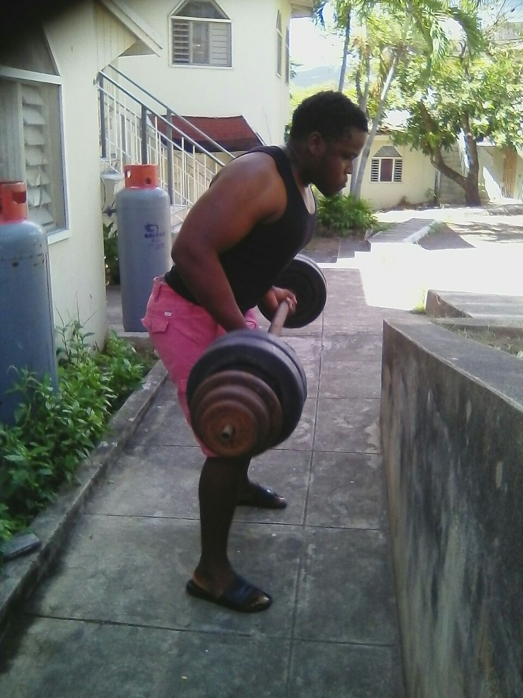
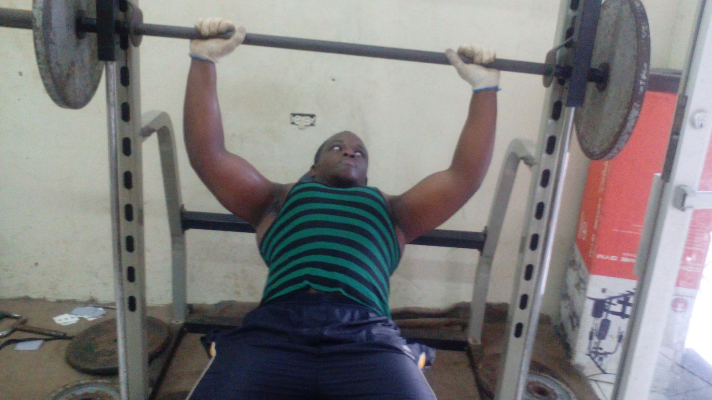

Frequently Picked Exercise #1: Bent-over barbell row
The bent-over barbell row is among my favourite exercises. It strengthens the biceps and the upper back. The bent over row teaches you how to bend at the hips (as opposed to the waist). This is necessary to be able to safely and effectively execute proper form on any exercise that involves bending over.
How to do the Bent-over barbell row?
Stand holding a barbell with your palms facing up. Bend your knees slightly and lean forward by bending at the waist. Keeping your back straight, and elbows close to your body, row the barbell towards your chest, squeezing your back muscles. Slowly lower to the starting position.
Frequently Picked Exercise #2: Bench Press
The bench press is by far my most favourite exercise. It strengthens the triceps, chest and the front deltoids. Other benefits of adding bench presses to your weight-training regimen include increasing upper body strength, improving muscular endurance, and even preparing your upper body to do movements like pushups. They also can be an effective strengthening exercise for sports like sprinting, hockey, and football.
How to do the Bench Press?
Hold the weight directly over the shoulders, arms slightly wider than shoulder height. Push the weight up until your arms are angled at 45 degrees at the top. Slowly lower the weight back down to chest height, elbows out to the sides.
